01
CryoSieve
Particle sorting and sieving for single-particle cryo-EM. CryoSieve helps remove unnecessary particles from final stacks so reconstruction quality can improve.
Cryo-EM workflow copilot
Organize projects, connect processing jobs, and review results in one graphical workspace. CoCo brings together data preparation, reconstruction, and analysis, including CryoSieve, CryoPROS, and EModelG.
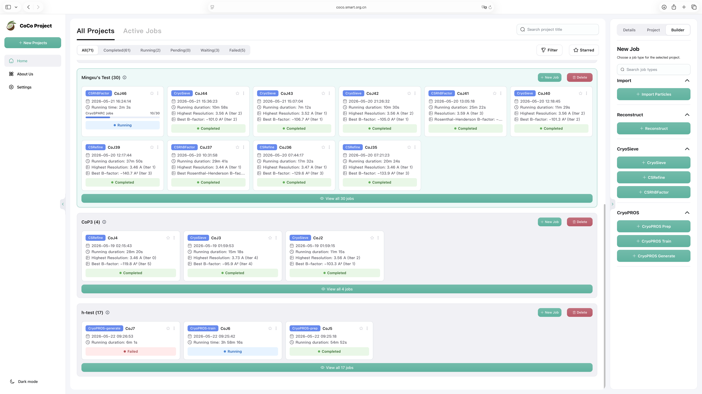
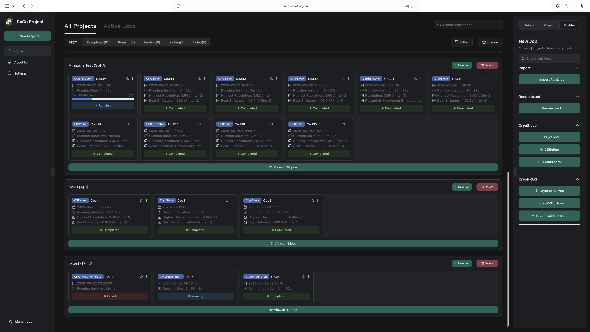
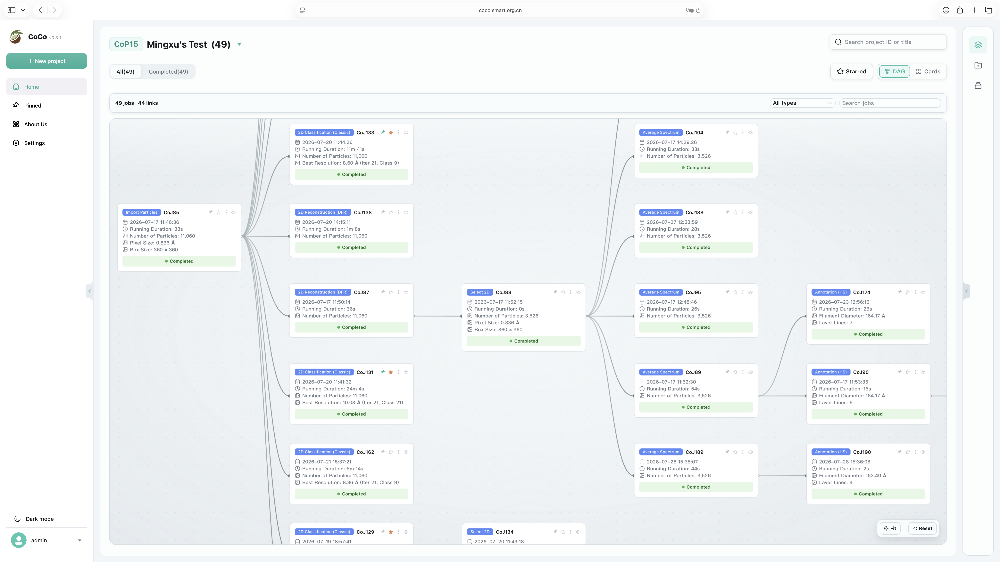
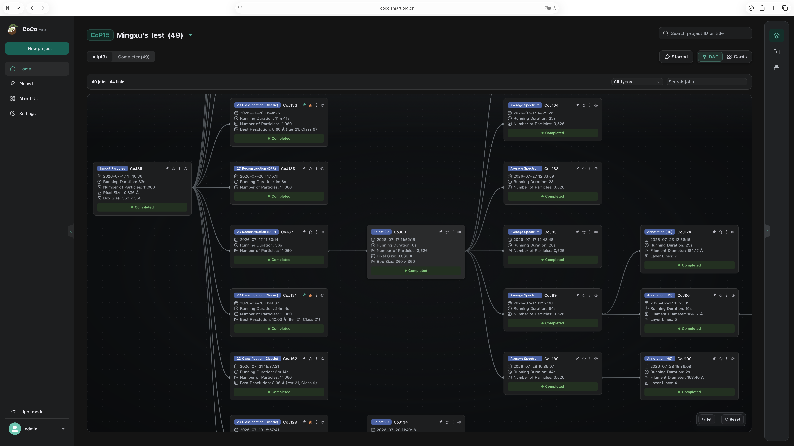
Particle sorting and sieving for single-particle cryo-EM. CryoSieve helps remove unnecessary particles from final stacks so reconstruction quality can improve.
A preferred-orientation correction framework for single-particle cryo-EM, using AI-generated auxiliary particles and co-refinement.
Automated glycan and protein backbone modeling from cryo-EM density. EModelG combines AI detection with density-guided modeling to support studies of proteins, glycoproteins, and glycan-rich complexes.
Packaged CoCo v0.3.5 release. View change log
"A minority of final stacks yields superior amplitude in single-particle cryo-EM"
Nature Communications, 2023If CryoSieve contributes to your work, please cite the paper above.
"CryoPROS: Correcting misalignment caused by preferred orientation using AI-generated auxiliary particles"
Nature Communications, 2025If CryoPROS contributes to your work, please cite the paper above.
"Structural N- and O-glycans revealed by high-resolution cryo-EM analysis of tubular mastigonemes"
Science, 2026If EModelG contributes to your work, please cite the paper above.
CoCo wrapped module
An advanced particle sorting and sieving solution for single-particle cryo-EM analysis. CryoSieve eliminates unnecessary particles from final stacks, producing cleaner density maps with measurably higher resolution.
v1.3.0CryoSieve is an advanced software solution designed for particle sorting and sieving in single-particle analysis for cryo-EM. Supported by extensive experimental results, it has demonstrated superior performance compared to other cryo-EM particle sorting algorithms. For certain datasets, the precision of CryoSieve's particle subset selection approaches the theoretical limit.
Validated on publicly available cryo-EM datasets from EMPIAR:
| Dataset | Particles | Mass (kDa) | Source |
|---|---|---|---|
| TRPA1 | 43,585 | 688 | EMPIAR-10024 |
| Hemagglutinin | 130,000 | 150 | EMPIAR-10097 |
| LAT1 | 250,712 | 172 | EMPIAR-10264 |
| pfCRT | 16,905 | 102 | EMPIAR-10330 |
| TSHR-Gs | 41,054 | 125 | EMPIAR-11120 |
| TRPM8 | 42,040 | 513 | EMPIAR-11233 |
| Apoferritin | 382,391 | 440 | EMPIAR-10200 |
| Streptavidin | 23,991 | 52 | EMPIAR-10269 |
The sieving process involves iterative rounds of 3D reconstruction and particle filtering. In each round, CryoSieve analyzes the reconstructed density map, identifies particles that degrade the final resolution, and removes them. The high-pass cutoff frequency typically increases with each iteration, progressively refining the particle subset.
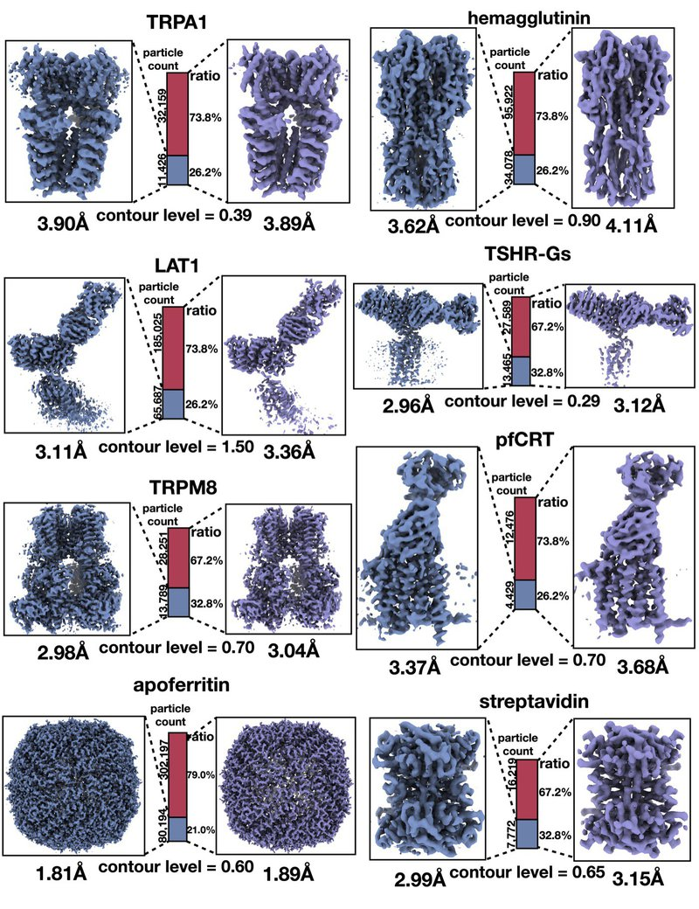
"A minority of final stacks yields superior amplitude in single-particle cryo-EM"
Nature Communications, 2023If CryoSieve contributes to your work, please cite the paper above. Full demo datasets and expected results are available at cryosieve-demos.
Create a CryoSieve job from particle input in the CoCo workbench. CoCo runs sieving with its bundled DFR reconstruction and postprocessing tools in the managed runtime. Selected particles can feed downstream reconstruction or CryoSPARC refinement jobs; no external RELION executables are required.
CoCo wrapped module
A preferred-orientation correction framework for single-particle cryo-EM, using AI-generated auxiliary particles and co-refinement of synthesized and experimental data.
v1.0.1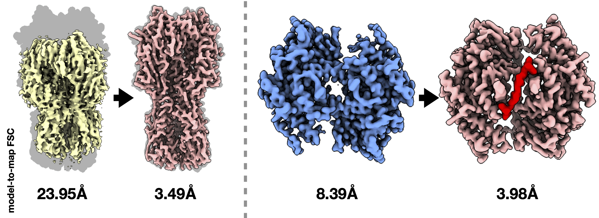
CryoPROS addresses misalignment errors caused by preferred orientation in single-particle cryo-EM. It uses AI to generate auxiliary particles and performs co-refinement between synthesized and experimental data, correcting orientation bias that would otherwise degrade reconstruction.
CryoPROS uses AI to generate auxiliary particles that compensate for preferred-orientation bias during cryo-EM reconstruction. These synthetic particles are co-refined with experimental data, producing a more isotropic orientation distribution and reducing misalignment errors.
"CryoPROS: Correcting misalignment caused by preferred orientation using AI-generated auxiliary particles"
Nature Communications, 2025If CryoPROS contributes to your work, please cite the paper above.
CoCo organizes CryoPROS as connected Prep, Train, and Generate jobs. Use the managed runtime to prepare inputs, train the model, and generate auxiliary particles. A separate Export to CryoSPARC job can transfer completed outputs for further refinement.
CoCo analysis module
Estimate the contrast transfer function of micrographs and inspect fitted parameters and Thon-ring diagnostics within the CoCo workflow.
Included in CoCoCTFA estimates CTF parameters from input micrographs and produces micrograph metadata for downstream processing. Its inspection view brings fitted parameters, spectra, and estimation summaries together for review.
Create a CTFA job from imported micrographs, select a compute lane, and review the resulting estimates in CoCo. Connect the output to Blob Picker or Filament Picker, then continue with particle extraction. CTFA runs in the managed CoCo runtime.
CoCo analysis module
Automated glycan and protein backbone modeling from cryo-EM density. EModelG combines AI detection, density fitting, and structural restraints to support studies of proteins, glycoproteins, and glycan-rich complexes.
Included in CoCo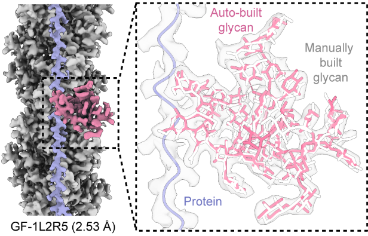
Glycan diversity, flexibility, and complex linkages make structural modeling challenging. EModelG links AI detection with density-guided template fitting, joint optimization, and chain refinement.
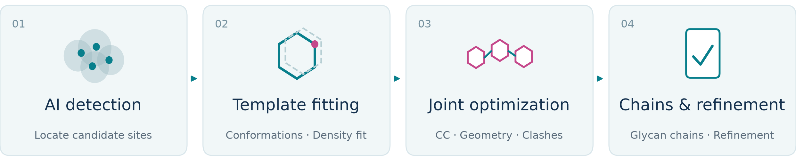
EModelG combines AI detection, backbone tracing, and density validation to retain reliable long fragments and extend models using peptide-derived symmetry.
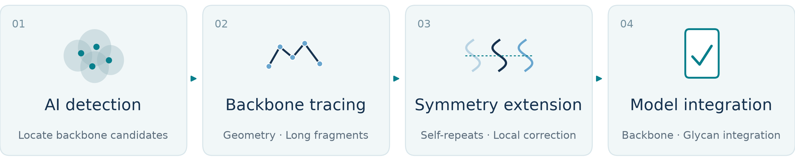
The PLL-1 example illustrates an automated protein model fitted into cryo-EM density. Protein scaffolds and glycan connectivity provide complementary views of complex assemblies.
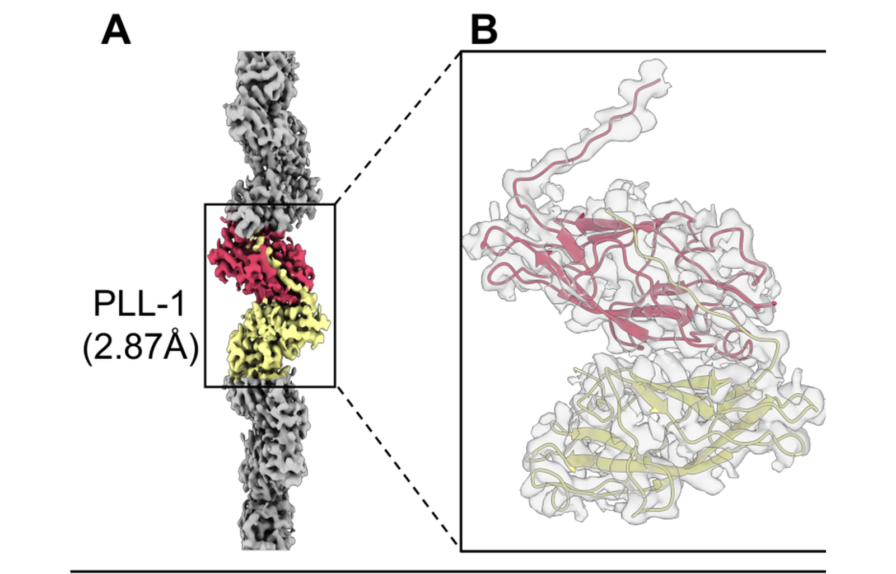
"Structural N- and O-glycans revealed by high-resolution cryo-EM analysis of tubular mastigonemes"
Science, 2026If EModelG contributes to your work, please cite this paper.
CoCo v0.3.5 release guide
Set up the Linux x86_64 release with its managed runtime, then connect the services and compute lanes your workflows need.
v0.3.5Fast path
Begin in an empty release directory containing the archive. Check the Linux host prerequisites before installing.
tar -xzf coco-0.3.5.tar.gz
cd cocobin/coco-install-runtime.shjava -jar backend/coco-0.3.5.jarhttp://localhost:8078Before install
The packaged application and managed runtime target Linux x86_64 (amd64) with glibc 2.17 or newer. macOS is supported for source development, but cannot run this packaged runtime.
bash, tar, gzip, awk, and date.PYTHON to another Python 3 executable if needed.The managed runtime supplies the Python environment and CUDA user-space dependencies. CryoSieve and CryoPROS use bundled CoCoShed packages. The installer also validates the bundled setsid executable.
Release archive
Place coco-0.3.5.tar.gz in an empty release directory and extract it there.
tar -xzf coco-0.3.5.tar.gz
cd cocococo/
├── bin/
│ ├── coco-install-runtime.sh
│ ├── coco-validate-runtime-pack.py
│ ├── coco-write-runtime-profile.py
│ ├── coco_runtime_checks.py
│ ├── coco-run-cocoshed-smoke.py
│ └── coco-validate-native-compatibility.py
├── backend/
│ └── coco-0.3.5.jar
├── cocoshed/
│ ├── manifest.json
│ └── <compiled copra_* packages>/
├── runtime/
│ ├── coco-version
│ ├── runtime-environment.yml
│ └── native-compatibility.json
└── runtime-packs/
└── coco-runtime-0.3.5.tar.gzruntime/coco-version selects the matching runtime pack and environment. The installer checks the bundled environment specification and the compiled package inventory in cocoshed/manifest.json.
Extracting over an older release can leave obsolete files behind. For an existing installation, follow Backups and upgrades to preserve state and saved paths.
Bundled environment
Run the installer from the extracted coco/ directory.
bin/coco-install-runtime.shThe installer validates and extracts the runtime, checks the complete CoCoShed manifest, relocates the environment, and validates its commands, Python modules, and CUDA headers. It publishes these paths:
runtime/envs/coco-runtime-0.3.5/
runtime/coco-runtime-profile.jsonThe runtime, profile, and CoCoShed files are updated together. A failed installation restores the previous installation.
--check-only validates an existing environment and rewrites its profile. Use it for a later audit or diagnosis; a successful fresh installation has already completed validation.--force replaces the selected version's runtime and CoCoShed inventory from the bundled release.--root /absolute/path/to/coco specifies the installation root explicitly.--run-cocoshed-smokes adds optional functional diagnostics during installation or audit. Their results are reported separately from runtime readiness.--force and --check-only cannot be combined. Manifest and exact-inventory validation always run.
Launch
cd /absolute/path/to/coco
java -jar backend/coco-0.3.5.jarOpen http://localhost:8078. Always start from the same coco/ working directory: project references, accounts, and site settings are stored relative to it. Run one active backend JVM for each project tree.
To use a different port, append --server.port=8080. If the runtime profile cannot be located automatically, specify it while keeping the same working directory:
java -Dcoco.runtime.profile=/absolute/path/to/coco/runtime/coco-runtime-profile.json \
-jar backend/coco-0.3.5.jarValidation
runtime/envs/coco-runtime-0.3.5/ and runtime/coco-runtime-profile.json exist after installation.http://localhost:8078.READY.GET /api/v1/managed-runtimes/currentJob submission also checks the capabilities required by that job. For example, Import Structure requires STRUCTURE and Auto Mask requires AUTO_MASK. Global runtime readiness alone does not replace these checks.
Application settings
Default settings are bundled in the backend JAR and can be overridden with Spring Boot command-line properties.
server.port=8078
server.servlet.session.timeout=24h
app.auth.mode=DISABLED
app.auth.users-file=auth/users.jsonDISABLED treats every client as the local administrator. Use it on a trusted single-user host or isolated network.BOOTSTRAP creates an administrator when the user store is missing or empty.ENFORCED requires login for the interface and API. Create the initial administrator before enabling it; an empty user store prevents startup.Run the following from the fixed coco/ working directory. Replace YOUR_TEMPORARY_PASSWORD with your chosen password.
java -jar backend/coco-0.3.5.jar \
--app.auth.mode=BOOTSTRAP \
--app.auth.bootstrap-admin-username=admin \
--app.auth.bootstrap-admin-password='YOUR_TEMPORARY_PASSWORD' \
--app.auth.bootstrap-admin-must-change-password=truehttp://localhost:8078/projects./login with the administrator account./account/password when prompted./projects.Changing the bootstrap password in later launches does not overwrite an existing account. For an intentional reset, use:
java -jar backend/coco-0.3.5.jar \
--app.auth.mode=BOOTSTRAP \
--app.auth.bootstrap-admin-username=admin \
--app.auth.reset-admin-password='YOUR_TEMPORARY_PASSWORD'Remove the reset flag from future launches after resetting the password. Preserve auth/users.json; it is the account database. The default login-session idle timeout is 24 hours.
Site integration
Configure the services used by your workflows in Settings → Environment Check after the managed runtime reports READY.
https://cryosparc.example.org. Include the port if needed; omit page paths, queries, and fragments.Path mapping describes shared files already available to both systems; it does not transfer data. Ensure the CoCo host can read the actual project directories.
WIT workflows need HTTPS access from the CoCo server to the CryoSeek WIT service. In CryoSeek WIT Connectivity, an administrator can configure Proxy Command and select Save and run WIT probe.
The default command is source /usr/local/bin/set_proxy.sh. To use the server's inherited network environment without extra setup, enter the nonempty Bash no-op :.
Structural modeling
The EModelG algorithm is bundled in CoCoShed. Its larger resource bundles are downloaded separately through Environment Check.
/shared/emodelg. CoCo creates the version subdirectory automatically.https://cocoproject.org.cn/emodelg/, or an HTTPS mirror serving the same fixed archive filenames.All EModelG modes require both resource bundles: 21 SO(3) libraries and three checkpoints. CoCo verifies them against its bundled catalog. Rerun Environment Check for an existing resource installation when upgrading to this release.
Glycan (+ protein) modeling (full) also requires a separately installed Phenix. In the Phenix card, set Installation Path and run Check. The optional Environment Command runs before Phenix activation during both the check and job execution.
Phenix and any paths used by its environment command must be accessible from the backend and compute nodes. Protein modeling and Protein modeling (preserve existing glycans) do not require Phenix.
Select a lane with one available GPU. Preserve-existing-glycans mode requires a glycan-only input structure; a structure containing protein CA atoms is rejected. Clear or Restart begins a fresh attempt from the start.
Host execution
Open Settings → Cluster Configuration, create a Local GPU lane, and choose the concrete devices in Local GPU Pool. Refresh the inventory after hardware changes.
nvidia-smi for GPU discovery.Local GPU lanes do not require a scheduler client. CoCo activates the managed runtime for each job.
Cluster execution
In Settings → Cluster Configuration, set Max GPUs per Node to the lane's per-node capacity. Choose node count, GPUs per node, and CPU budget in each job dialog.
Put fixed site settings such as partition, account, time, memory, and CPU defaults in Cluster Template. Adapt this example to your cluster:
#!/bin/bash
#SBATCH --partition=<gpu_partition>
#SBATCH --mem=128G
#SBATCH --cpus-per-task=8CoCo generates job names, stdout/stderr paths, node/task layout, and GPU requests. Leave those directives out of the template. Use Local Environment for required site setup such as module load commands.
For distributed torchrun jobs, CoCo starts one SLURM task per node, then one worker per requested GPU. Two nodes with four GPUs each use two SLURM tasks and eight GPU workers.
The job's CPU budget is per node and shared by its GPU workers. A typed job CPU budget overrides lane CPU settings. Avoid activating another Conda environment or launching torchrun or mpirun in Local Environment.
Cluster execution
Use IBM Spectrum LSF 10.1 Fix Pack 9 or newer. Run the CoCo backend directly on the submission host, with these commands available to its service account in the same non-interactive startup environment:
command -v bsub blaunch bjobs bhist bkillThe cluster must enable LSB_GPU_NEW_SYNTAX=extend and provide task-level CUDA_VISIBLE_DEVICES<number> bindings. Ask the cluster administrator to verify these settings; GPU requests using nocvd are incompatible.
Set Max GPUs per Node to the lane's capacity. Keep only fixed queue, project, wall-time, memory, and site constraints in Cluster Template:
#!/bin/bash
#BSUB -q <gpu_queue>
#BSUB -P <project_name>
#BSUB -W 24:00Leave job identity, log paths, slot and host counts, span[...], and GPU requests to CoCo. Do not add -outdir, interactive submission flags, or GPU constraints in -R.
For jobs with a typed CPU budget, CoCo requests nodes × CPUs per node slots and places that CPU budget on each host. blaunch starts one launcher per allocated host, then one worker per requested GPU.
The backend and compute nodes must resolve the same absolute CoCo, runtime, CoCoShed, project, and job paths. Initialize the LSF client before starting Java; a lane's Local Environment runs too late to configure backend submission commands.
Workflow tools
CoCo also includes data preparation, reconstruction, and analysis jobs. Inspect the deployed catalog through:
GET /api/v1/job-typesThe reconstruction job keys are 3D_RECONSTRUCTION_DFR and 3D_RECONSTRUCTION_SGD.
Job execution
You can prepare job drafts before the runtime is installed. Submission requires a READY runtime and the capabilities needed by the selected job.
Generated scripts activate the versioned runtime automatically for Local GPU, SLURM, and LSF execution. Legacy lane activationCmd settings are ignored.
Retain older runtime/envs/coco-runtime-<version>/ directories when saved scripts still reference them. Their absolute paths are part of the saved execution context.
Installation lifecycle
Keep the same installation path and backend working directory across upgrades. With default settings, these directories inside coco/ contain persistent operator state:
projectConfig/ — registered project references.pageParam/ — saved page parameters and scheduler lanes.path/ — external connection settings.auth/ — users, CryoSPARC sessions, profiles, and path mappings.settings/ — artifact-signing key and SSD cache settings.bookmarks/ and user-settings/ — filesystem bookmarks and user preferences.If the user-store or artifact-signing-key location is overridden, back up its actual path. CryoSPARC account state follows the user-store parent directory. Project and job data may be outside the installation; back up those directories too. projectConfig/ stores references to them.
runtime/envs/ trees.--check-only for intentional reuse or --force to replace it. Resolve validation errors before restarting.Install the runtime at its final path; do not install it in a staging directory that will later be moved.
Optional acceptance
Choose end-to-end checks that apply to your site, especially after changing the runtime or compute lanes. These complement the fresh-install verification.
blaunch startup before enabling that execution mode for users.Recovery
Start from the fixed coco/ directory with java -jar backend/coco-0.3.5.jar --server.port=8080, then open that port.
Use a complete release containing runtime-packs/coco-runtime-0.3.5.tar.gz and runtime/runtime-environment.yml. A provenance-field error can indicate mixed installer and runtime versions; deploy the matching backend, helpers, metadata, and CoCoShed together.
Run bin/coco-install-runtime.sh --check-only. If files are missing or stale, reinstall with --force, then refresh Environment Check. Check-only reports undeclared CoCoShed artifacts instead of cleaning them.
Confirm runtime/coco-runtime-profile.json exists and that Java starts from the extracted coco/ directory. Use the explicit profile option under Start CoCo if needed.
Verify shared mounts, permissions, and path mappings from the CoCo host. For an expired saved session, reconnect with the account password. An API connection check does not establish filesystem access.
Check the resource directory's permissions, HTTPS or proxy access, and mirror filenames. Rerun the resource check to download and verify both bundles. For full mode, verify Phenix and its environment command on the backend and compute nodes.
Check bsub, blaunch, bjobs, bhist, and bkill as the backend account in its startup environment. Inspect bjobs -l <job_id> and bhist -l <job_id>. Verify site GPU bindings and shared paths, and remove conflicting template resource directives.
Archived CoCo v0.3.2 release guide
Set up the Linux x86_64 release with its versioned runtime, then connect CryoSPARC and configure the compute lanes your workflows need.
v0.3.2Fast path
Begin in an empty release directory containing the archive. Check the Linux host prerequisites before installing.
tar -xzf coco-0.3.2.tar.gz
cd cocobin/coco-install-runtime.shjava -jar backend/coco-0.3.2.jarhttp://localhost:8078Before install
The v0.3.2 packaged application and managed runtime target Linux x86_64 (amd64). macOS is supported for source development, but cannot run this packaged runtime.
bash, tar, gzip, awk, date, and du.PYTHON to another Python 3 executable if needed.CryoSieve and CryoPROS use the bundled runtime. Separate Python environments and RELION executables are not required for packaged v0.3.2 workflows. RELION STAR metadata remains supported.
The managed runtime includes setsid; the installer checks it before marking the runtime ready.
Release archive
Place coco-0.3.2.tar.gz in an empty release directory and extract it there.
tar -xzf coco-0.3.2.tar.gz
cd cocoThe main release paths are:
coco/
├── bin/
│ ├── coco-install-runtime.sh
│ ├── coco-validate-runtime-pack.py
│ ├── coco-run-cocoshed-smoke.py
│ └── coco-validate-native-compatibility.py
├── backend/
│ └── coco-0.3.2.jar
├── cocoshed/
│ ├── manifest.json
│ └── <compiled copra_* packages>/
├── modules/
│ ├── coco-module-metadata/jobTypeMappings/
│ ├── cryopros/
│ └── pySymStat/
├── runtime/
│ └── coco-version
├── runtime-packs/
│ └── coco-runtime-0.3.2.tar.gz
├── .gitmodules
└── modules.lockruntime/coco-version identifies the matching runtime pack and environment. cocoshed/ contains the compiled packages used by the bundled algorithms; modules/ contains CryoPROS, pySymStat, and job metadata.
Extracting over an older release can leave obsolete files behind. The runtime installer replaces its managed runtime and CoCoShed files, but it does not clean the entire release tree.
Managed environment
Run the installer from the extracted coco/ directory.
bin/coco-install-runtime.shThe installer validates the matching runtime archive, stages the runtime and bundled CoCoShed packages, runs conda-unpack, and checks commands, Python modules, CUDA development headers, and algorithm entry points.
runtime/envs/coco-runtime-0.3.2/
runtime/coco-runtime-profile.jsonCommand checks include:
pythoncsparc2star.pystar.pympiruntorchrunsetsidcoco-volume-toolsThe installer also checks the bundled CryoPROS and pySymStat sources and required Python packages, including PyTorch, CuPy, pyem, and CryoSPARC tools. CUDA headers such as cuComplex.h come from the managed runtime.
bin/coco-install-runtime.sh --check-onlybin/coco-install-runtime.sh --forcebin/coco-install-runtime.sh --root /absolute/path/to/cocoA normal install, including --force, stages the replacement before switching it into place. If validation fails after the switch, the previous runtime, profile, and CoCoShed tree are restored together. --check-only reports unexpected CoCoShed files without removing them.
--root must point to the extracted coco/ directory. Use --force and --check-only separately.
Launch
Start the backend from the extracted release directory. It also serves the built frontend. Run one active CoCo backend per project storage tree; multiple backend instances sharing the same project files are unsupported.
java -jar backend/coco-0.3.2.jarjava -jar backend/coco-0.3.2.jar --server.port=8080java -jar coco/backend/coco-0.3.2.jar --server.port=8078The backend normally infers the runtime profile from the release layout. Provide it explicitly only when the standard layout is unavailable.
java -Dcoco.runtime.profile=/absolute/path/to/coco/runtime/coco-runtime-profile.json \
-jar backend/coco-0.3.2.jarValidation
Confirm the installed environment and runtime profile exist, then run the validator.
runtime/envs/coco-runtime-0.3.2/
runtime/coco-runtime-profile.jsonbin/coco-install-runtime.sh --check-onlyhttp://localhost:8078.READY.GET /api/v1/managed-runtimes/currentApplication settings
Default settings are bundled in the backend JAR and can be overridden with Spring Boot command-line properties.
server.port=8078
app.auth.mode=DISABLED
app.auth.users-file=auth/users.jsonAuthentication modes are DISABLED, BOOTSTRAP, and ENFORCED. User records are stored relative to the process working directory, so keep that directory consistent across restarts. Replace YOUR_TEMPORARY_PASSWORD in the examples with your chosen password.
java -jar backend/coco-0.3.2.jar \
--app.auth.mode=BOOTSTRAP \
--app.auth.bootstrap-admin-username=admin \
--app.auth.bootstrap-admin-password='YOUR_TEMPORARY_PASSWORD' \
--app.auth.bootstrap-admin-must-change-password=truehttp://localhost:8078/projects./login with the administrator account./account/password when prompted./projects.BOOTSTRAP creates the administrator only when auth/users.json is missing or empty. Changing the bootstrap password later does not overwrite an existing account.
java -jar backend/coco-0.3.2.jar \
--server.port=8078 \
--app.auth.mode=BOOTSTRAP \
--app.auth.bootstrap-admin-username=admin \
--app.auth.reset-admin-password='YOUR_TEMPORARY_PASSWORD'Site integration
Open Settings → Environment Check and confirm Managed CoCo Runtime is READY. Configure CryoSPARC when your workflow imports from, refines in, or exports to CryoSPARC.
https://cryosparc.example.org. Include the port if needed; omit page paths such as /browse or /login.Path mapping describes shared files already available to both systems; it does not transfer particle data. CryoSieve and CryoPROS use the managed runtime automatically.
Cluster execution
Open Settings → Cluster Configuration. A lane stores the fixed settings of a queue or partition; each job chooses its node count and GPUs per node.
4 for a node with four available GPUs.#!/bin/bash
#SBATCH --partition=<gpu_partition>
#SBATCH --mem=128G
#SBATCH --cpus-per-task=8Leave job name, stdout/stderr paths, node count, task count, and GPU requests out of the template. CoCo generates them for each job, including --gpus-per-node. A distributed torchrun job uses a task count of nodes × GPUs per node.
Requests above the lane’s Max GPUs are rejected. Do not activate another conda environment or start an extra distributed launcher in the lane setup.
Lane templates execute shell commands as the backend or job account. Give lane editing access to trusted administrators. With authentication disabled, use a trusted single-user host or an isolated network.
Cluster execution
CoCo supports IBM Spectrum LSF 10.1 Fix Pack 9 or newer. Run the backend directly on an LSF submission host. In the service account and non-interactive environment that starts Java, confirm these commands are available:
command -v bsub blaunch bjobs bhist bkillInitialize the site’s LSF client before starting CoCo. A lane’s Local Environment runs inside the submitted job and cannot supply missing scheduler commands to the backend. CoCo submits directly from the host and does not provide an SSH hop.
LSB_GPU_NEW_SYNTAX=extend. Fix Packs 9–12 require explicit administrator configuration; Fix Pack 13 and newer use it by default.CUDA_VISIBLE_DEVICES<number> variables. A merged mps=...,nocvd setting is incompatible with CoCo’s GPU binding.blaunch.#!/bin/bash
#BSUB -q <gpu_queue>
#BSUB -P <project_name>
#BSUB -W 24:00Set Max GPUs to the lane’s limit per host. Each job chooses its host count and GPUs per host. CoCo generates job identity, logs, slot placement, and GPU allocation, then uses blaunch to start the workers.
Keep job name, output paths, -outdir, -n, -nnodes, -hostfile, span[...], -gpu, and GPU constraints in -R out of the template. Synchronous or interactive options -K, -I, -Ip, and -Is are unsupported.
Keep blaunch available inside the allocation. Lane setup may load site modules, but must not activate a separate Python environment or pre-launch mpirun or torchrun. Verify a representative job on each lane, including a multi-node job if that lane will support one.
Package inventory
The release includes core and cryopros module metadata, compiled algorithms under cocoshed/, and CryoPROS and pySymStat sources under modules/.
Check the job types exposed by the installed release:
GET /api/v1/job-typesThe main workflow choices are Import Particles, Restack Particles, 3D Reconstruction (DFR), 3D Reconstruction (SGD), CryoSieve, CSRefine, CSRhBFactor, CryoPROS Prep / Train / Generate, and Export to CryoSPARC.
The reconstruction identifiers are 3D_RECONSTRUCTION_DFR and 3D_RECONSTRUCTION_SGD. The older RECONSTRUCT identifier is not a supported alias in this version.
For module installation details, inspect the packaged manifests and modules.lock. Module installation metadata has no public v1 API.
Submission guard
All supported job types require a READY runtime before submission or execution. Drafts can be created and edited while the runtime is being prepared.
Generated local, SLURM, and LSF scripts activate runtime/envs/coco-runtime-0.3.2 automatically. Managed jobs ignore legacy activationCmd values.
The installer retains older versioned runtime directories so previously generated jobs can continue using their recorded environment paths.
Acceptance checks
Start with a small representative particle dataset and verify the workflows your lab will use.
DFR and CryoSieve support single-node and multi-node GPU execution. The job dialog and lane capacity determine the requested resources.
Troubleshooting
java -jar backend/coco-0.3.2.jar --server.port=8080Use the complete v0.3.2 release, with runtime/coco-version and runtime-packs/coco-runtime-0.3.2.tar.gz. Keep the release and runtime versions matched.
bin/coco-install-runtime.sh --check-onlyConfirm the host is Linux x86_64 and has Python 3. Missing commands, Python modules, CUDA headers, or CoCoShed files require the complete matching runtime and release resources.
bin/coco-install-runtime.sh --forceRefresh Environment Check after installation. A failed GPU job also requires checking the host driver and the GPU allocation on its execution host.
Confirm runtime/coco-runtime-profile.json exists. Start from the extracted directory or pass its absolute path with -Dcoco.runtime.profile, as shown under Start CoCo.
Verify the account connection, shared data access, and any path-prefix mapping in Environment Check. A successful API connection alone does not make particle files accessible.
Check the LSF commands in the backend service environment and inspect the scheduler record using the same account:
bjobs -l <job_id>
bhist -l <job_id>Verify queue permissions, GPU syntax and binding, shared paths, and blaunch. A lane’s Local Environment does not initialize the backend’s scheduler client.
cocoshed/manifest.json
modules/cryopros/module.yaml
modules/pySymStat/src/pySymStat/
modules/coco-module-metadata/jobTypeMappings/cryopros/jobTypeMapping.json
modules.lockExport to CryoSPARC is a core job in v0.3.2. Its scripts/export_to_cryosparc.py resource is inside the backend JAR; it is not installed under modules/cryopros/.
Stop new LSF submissions and finish or cancel active jobs using the LSF-capable version. Back up the release, project/job data, and lane configuration, then remove or convert LSF lanes before starting the older backend. An older version cannot monitor, cancel, recover, or resubmit active LSF jobs.
Archived CoCo v0.2.0 release guide
Install the v0.2.0 managed runtime, start the web interface, and configure the CryoSPARC, RELION, and SLURM settings used by this release.
v0.2.0Fast path
tar -xzf coco-0.2.0.tar.gz
cd cocobin/coco-install-runtime.shjava -jar backend/coco-0.2.0.jarhttp://localhost:8078Before install
Prepare a Linux or macOS machine with a writable installation directory and these command-line tools:
bashtar and gzipawk, date, and duUse a runtime pack built for the target operating system and architecture. The v0.2.0 packaging process supplies a prebuilt Conda environment; a compatible shell alone does not make that environment portable.
Access to CryoSPARC and RELION is required for workflows that use them. CryoSieve and CryoPROS are bundled with CoCo and do not need separate Python environments in a normal packaged deployment.
Release archive
The website provides coco-0.2.0.tar.gz. The v0.2.0 repository documentation calls this archive coco.tar.gz; both examples use the extracted coco/ directory. Use the downloaded filename:
tar -xzf coco-0.2.0.tar.gz
cd cocoExpected layout:
coco/
├── bin/
│ └── coco-install-runtime.sh
├── backend/
│ └── coco-0.2.0.jar
├── modules/
│ ├── cryosieve/
│ └── cryopros/
├── runtime/
├── runtime-packs/
│ └── coco-runtime.tar.gz
├── .gitmodules
└── modules.lockbackend/ contains the runnable backend and embedded frontend.bin/ contains the runtime installer and validator.runtime-packs/ contains the managed environment archive.modules/ contains bundled CryoSieve and CryoPROS resources.modules/cryosieve/cryosieve_video_tutorial.mp4 is intentionally omitted and is not required at runtime.
Managed environment
Run the installer from the extracted coco/ directory.
bin/coco-install-runtime.shThe installer checks the runtime archive for unsafe paths, extracts it, runs conda-unpack, validates required commands, and writes the backend profile.
runtime/envs/coco-runtime/runtime/coco-runtime-profile.jsonValidation covers Python, CryoSPARC conversion, MPI, RELION, PyTorch launch, and image-handling commands:
pythoncsparc2star.pystar.pympirunrelion_reconstruct_mpirelion_reconstructrelion_postprocesstorchrunrelion_image_handlerCryoSieve and CryoPROS are bundled modules and are not validated as separate top-level CLI commands.
bin/coco-install-runtime.sh --check-onlybin/coco-install-runtime.sh --forcebin/coco-install-runtime.sh --root /absolute/path/to/coco--root must point to the extracted coco/ directory. In v0.2.0, --force removes the existing runtime before installing again. Do not combine it with --check-only.
Launch
Start the backend from the extracted release directory. It also serves the built frontend.
java -jar backend/coco-0.2.0.jarjava -jar backend/coco-0.2.0.jar --server.port=8080java -jar coco/backend/coco-0.2.0.jar --server.port=8078The backend normally infers the runtime profile from the release layout. Provide it explicitly only when the standard layout is unavailable.
java -Dcoco.runtime.profile=/absolute/path/to/coco/runtime/coco-runtime-profile.json \
-jar backend/coco-0.2.0.jarValidation
Confirm the installed environment and runtime profile exist, then run the validator.
runtime/envs/coco-runtime/
runtime/coco-runtime-profile.jsonbin/coco-install-runtime.sh --check-onlyhttp://localhost:8078.READY.GET /api/open/settings/managed-runtimeApplication settings
Default settings are bundled in the backend JAR and can be overridden with Spring Boot command-line properties.
server.port=8078
app.auth.mode=DISABLED
app.auth.users-file=auth/users.jsonAuthentication modes are DISABLED, BOOTSTRAP, and ENFORCED. User records are stored relative to the process working directory, so keep that directory consistent across restarts. Replace YOUR_TEMPORARY_PASSWORD in the examples with your chosen password.
java -jar backend/coco-0.2.0.jar \
--app.auth.mode=BOOTSTRAP \
--app.auth.bootstrap-admin-username=admin \
--app.auth.bootstrap-admin-password='YOUR_TEMPORARY_PASSWORD' \
--app.auth.bootstrap-admin-must-change-password=truehttp://localhost:8078/home./login-verification./change-password when prompted./home.BOOTSTRAP creates the administrator only when auth/users.json is missing or empty. Changing the bootstrap password later does not overwrite an existing account.
java -jar backend/coco-0.2.0.jar \
--server.port=8078 \
--app.auth.mode=BOOTSTRAP \
--app.auth.bootstrap-admin-username=admin \
--app.auth.reset-admin-password='YOUR_TEMPORARY_PASSWORD'Site integration
Only CryoSPARC and RELION should appear as user-facing external dependencies in Environment Check.
READY.CryoSieve and CryoPROS remain built-in modules under modules/ and use runtime/envs/coco-runtime.
Cluster execution
A lane stores fixed settings for a queue or partition. GPU count and other per-job resources are selected in each job dialog.
module load.Do not place fixed node, task, or GPU requests in the lane template:
#SBATCH -N 1
#SBATCH --nodes=1
#SBATCH -n 1
#SBATCH --ntasks=1
#SBATCH --gpus=1
#SBATCH --gpus-per-node=1
#SBATCH --gpus-per-task=1
#SBATCH --gres=gpu:1CoCo generates those values from the job dialog:
#SBATCH -N 1
#SBATCH --ntasks=<task-count>
#SBATCH --gpus=<job num_gpus>
export COCO_NUM_GPUS=<job num_gpus>
export COCO_NPROC_PER_NODE=<job num_gpus>#!/bin/bash
#SBATCH --partition=<gpu_partition>
#SBATCH --mem=128G
#SBATCH --output=coco-%j.out
#SBATCH --error=coco-%j.errMax GPUs: 4If a request exceeds the lane's Max GPUs, CoCo rejects the submission. CryoSieve and CryoPROS jobs must not activate a separate Python or conda environment in the lane.
Package inventory
The package includes metadata for core, cryosieve, and cryopros.
GET /api/open/modules
GET /api/open/modules/installed
GET /api/open/modules/job-types
GET /api/open/modules/job-type-modulesPARTICLERESTACK_PARTICLESRECONSTRUCTCRYOSIEVECSREFINECSRHBFACTORCRYOPROS_PREPCRYOPROS_TRAINCRYOPROS_GENERATESubmission guard
The backend requires the managed runtime to report READY before any supported job type can be submitted or run.
activationCmd values are ignored for managed jobs.Acceptance checks
Test the v0.2.0 job relationships with a representative particle dataset.
PARTICLE job, then create RESTACK_PARTICLES from it.RECONSTRUCT from imported or restacked particles.CRYOSIEVE from imported or restacked particles, then CSREFINE or CSRHBFACTOR from its result.CRYOPROS_PREP from particle input, CRYOPROS_TRAIN from Prep, and CRYOPROS_GENERATE from Train.CRYOPROS_GENERATE. The export_cryopros.py resource comes from the CryoPROS module or the backend classpath fallback.Troubleshooting
java -jar backend/coco-0.2.0.jar --server.port=8080Confirm the complete release contains runtime-packs/coco-runtime.tar.gz.
bin/coco-install-runtime.sh --check-onlybin/coco-install-runtime.sh --forceStart from the extracted directory or pass runtime/coco-runtime-profile.json explicitly with -Dcoco.runtime.profile.
Return to Environment Check and verify the configured shell snippets. Keep built-in modules on the managed runtime.
modules/cryosieve/module.yaml
modules/cryosieve/jobTypeMapping.json
modules/cryopros/module.yaml
modules/cryopros/jobTypeMapping.json
modules/cryopros/scripts/export_cryopros.py
modules.lockRelease history
Explore what changed in each CoCo release, from the latest workflow improvements to earlier project capabilities.
Release notes will be added soon.
Prepare downstream jobs in advance, apply batch operations, choose DFR or SGD reconstruction, and export through a dedicated CryoSPARC job.
The project data job graph, multi-user access, standardized logs, CryoSPARC configuration, and CryoPROS result metrics.
Release notes
Release notes will be added soon.
Current release
Release notes
Plan downstream jobs in advance, manage multiple jobs together, and connect particle processing, reconstruction, and CryoSPARC export within one project.
Workflow continuity
CoCo v0.3.2 builds on the project workflow introduced in v0.2.0. Jobs can run in sequence when no human review is required, while researchers can still inspect results and choose outputs at key stages.
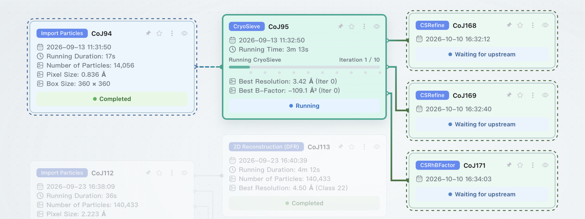
Task dependencies
In v0.2.0, an upstream job had to finish before a downstream job could be created. With v0.3.2, researchers can configure later steps and their dependencies while upstream work is still in progress.
For example, prepare a reconstruction job while particle selection is running. Once selection finishes, reconstruction can continue automatically if the selected particles do not need manual review.
Batch operations
Select multiple visible jobs in a project and apply the supported batch operations. Jobs and their dependency links stay in view, helping researchers make selections in context.
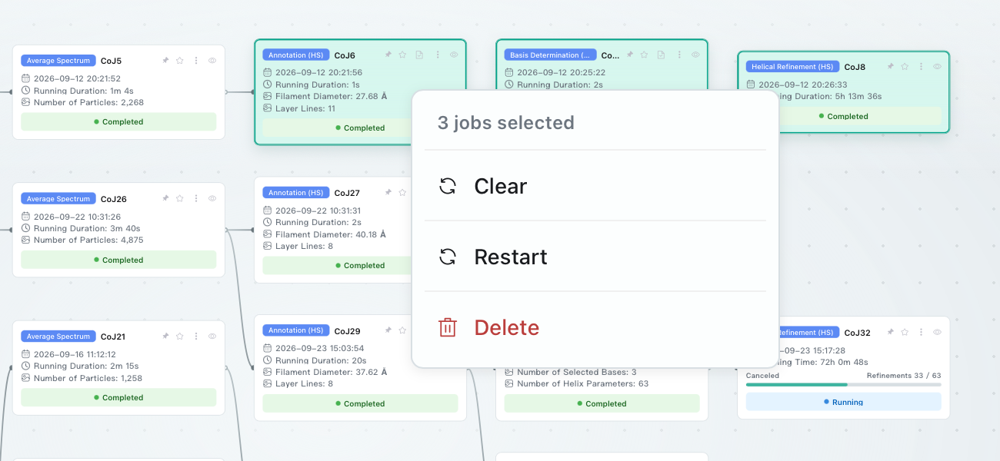
Reconstruction and export
The generic Reconstruct entry is now split into 3D Reconstruction (DFR) and 3D Reconstruction (SGD). Choose the reconstruction path when creating a job, then connect it to particle processing and algorithm analysis in the same project.
Export to CryoSPARC is now an independent workflow job that can follow particle processing, CryoSieve, CryoPROS, or 3D reconstruction. Pass outputs to CryoSPARC for further analysis while keeping upstream relationships visible in CoCo.
Ready to update
Archived release notes
This release brings task relationships and user access into the project workflow, making complex cryo-EM work easier to trace, share, and administer.
Major release
CoCo v0.2.0 keeps the unified workbench introduced in v0.1.0 and adds a clearer model for both computational relationships and team access.
Project data flow
The project task page now opens in a graph view by default. Jobs and their upstream and downstream relationships appear together, so researchers can recover context without moving through individual task pages.
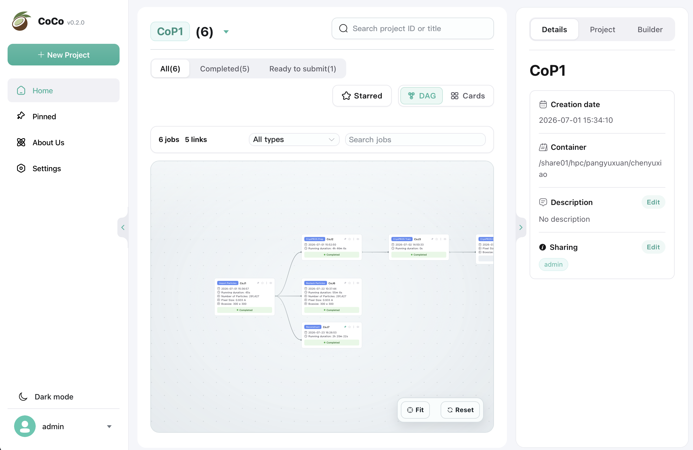
Shared access
Projects can now be shared with other CoCo users and assigned access permissions. Administrators also gain a dedicated user-management surface for maintaining accounts and deployment access.
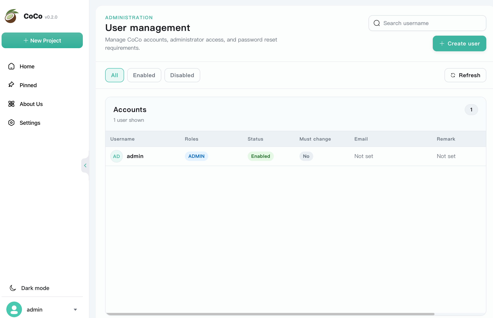
Also improved
stdout, stderr, and event logs are gathered into one consistent job-level record.
Status, progress, and run controls are clearer across the home page, sidebar, and job details.
Connection validation and email configuration make deployment checks more dependable.
CryoPROS Generate jobs now parse and present particle metrics with the rest of the result context.
Ready to update
Archived CoCo v0.1.0 release guide
Download the packaged archive, install the managed runtime, then start the Spring Boot backend.
v0.1.0Fast path
tar -xzf coco.tar.gz
cd cocobin/coco-install-runtime.shjava -jar backend/<backend runnable jar>http://localhost:8078Before install
Required runtime tools:
CoCo itself is packaged as a Spring Boot jar with the built frontend embedded. CryoSieve and CryoPROS use CoCo's managed runtime installed from runtime-packs/coco-runtime.tar.gz; users should not prepare separate CryoSieve or CryoPROS Python environments.
Release archive
Given the release artifact coco.tar.gz, unpack it and enter the release directory.
tar -xzf coco.tar.gz
cd cocoExpected layout:
coco/
├── bin/
│ └── coco-install-runtime.sh
├── backend/
│ └── <backend runnable jar>
├── modules/
│ ├── cryosieve/
│ └── cryopros/
├── runtime/
├── runtime-packs/
│ └── coco-runtime.tar.gz
├── .gitmodules
└── modules.lockThe CryoSieve tutorial movie modules/cryosieve/cryosieve_video_tutorial.mp4 is intentionally not included in the package and is not required for CoCo runtime.
Managed environment
From the unpacked coco/ directory, install the unified CryoSieve and CryoPROS runtime.
bin/coco-install-runtime.shThis unpacks runtime-packs/coco-runtime.tar.gz, runs conda-unpack, validates the CryoSieve and CryoPROS command-line tools, and prepares the managed runtime under:
runtime/envs/coco-runtimeIt also writes the runtime profile consumed by CoCo:
runtime/coco-runtime-profile.jsonIf the runtime already exists, validate it and rewrite the profile:
bin/coco-install-runtime.sh --check-onlyTo remove and reinstall the runtime:
bin/coco-install-runtime.sh --forceLaunch
Use the jar found under backend/.
java -jar backend/<backend runnable jar>You may also start from the parent directory, which is useful when existing project or auth data is relative to that working directory.
java -jar coco/backend/<backend runnable jar> --server.port=8078In packaged releases, CoCo first checks ./runtime/coco-runtime-profile.json, then infers coco/runtime/coco-runtime-profile.json from the jar location. If needed, override the runtime profile explicitly.
java -Dcoco.runtime.profile=/absolute/path/to/coco/runtime/coco-runtime-profile.json \
-jar coco/backend/<backend runnable jar> --server.port=8078The default backend port is 8078. Open:
http://localhost:8078Settings
Default application settings are bundled in the jar:
server.port=8078
app.auth.mode=DISABLEDTo override settings at runtime, provide Spring Boot properties. For example, to use another port:
java -jar backend/<backend runnable jar> --server.port=8080To enable auth, use one of the supported modes:
java -jar backend/<backend runnable jar> \
--app.auth.mode=BOOTSTRAP \
--app.auth.bootstrap-admin-username=admin \
--app.auth.bootstrap-admin-password=change-meSupported auth modes:
DISABLEDBOOTSTRAPENFORCEDWhen auth is enabled, file-based users are stored under auth/users.json, relative to the process working directory.
Auth flow
When auth is enabled, protected pages redirect unauthenticated users to /login-verification. Use the configured account and password to sign in.
For a fresh release test with bootstrap auth:
java -jar backend/<backend runnable jar> \
--server.port=8078 \
--app.auth.mode=BOOTSTRAP \
--app.auth.bootstrap-admin-username=admin \
--app.auth.bootstrap-admin-password=ChangeMe123 \
--app.auth.bootstrap-admin-must-change-password=trueThen open:
http://localhost:8078/home/home redirects to /login-verification.admin and password ChangeMe123.mustChangePassword is true, CoCo redirects to /change-password./home.BOOTSTRAP only creates the bootstrap admin when auth/users.json is missing or empty. If auth/users.json already contains users, changing app.auth.bootstrap-admin-password does not overwrite the existing admin password.
To reset the bootstrap admin password intentionally:
java -jar backend/<backend runnable jar> \
--server.port=8078 \
--app.auth.mode=BOOTSTRAP \
--app.auth.bootstrap-admin-username=admin \
--app.auth.reset-admin-password=ChangeMe123After reset, sign in with admin / ChangeMe123. CoCo will require a password change.
You can remove the test user file and bootstrap again only for disposable local tests.
rm -f auth/users.json
java -jar backend/<backend runnable jar> \
--server.port=8078 \
--app.auth.mode=BOOTSTRAP \
--app.auth.bootstrap-admin-username=admin \
--app.auth.bootstrap-admin-password=ChangeMe123Do not delete auth/users.json in production unless you intend to remove the stored users.
Environment check
Only these should appear as user-facing external dependencies in Environment Check:
After starting CoCo:
READY.The managed runtime status is also available at:
GET /api/open/settings/managed-runtimeCryoSieve and CryoPROS are built-in modules. They should not appear as top-level external dependency cards. Their module metadata and resources are packaged under modules/, and their CLI environment is provided by runtime/envs/coco-runtime.
Compute lanes
CoCo lanes describe how jobs are submitted to a compute environment. For a SLURM lane, the lane should contain the fixed SLURM template for that queue or partition, while per-job resources such as GPU count are chosen in each job dialog.
For a single-node GPU lane where different jobs may request different GPU counts, configure the lane as a capacity limit instead of a fixed GPU request.
Max GPUs = 4.module load commands.Avoid these lines in the SLURM lane template:
#SBATCH -N 1
#SBATCH --nodes=1
#SBATCH -n 1
#SBATCH --ntasks=1
#SBATCH --gpus=1
#SBATCH --gpus-per-node=1
#SBATCH --gpus-per-task=1
#SBATCH --gres=gpu:1CoCo generates those resource lines dynamically from the job dialog. For GPU jobs, the job dialog determines the requested GPU count, and CoCo writes a single-node SLURM header like:
#SBATCH -N 1
#SBATCH --ntasks=<task-count>
#SBATCH --gpus=<job num_gpus>
export COCO_NUM_GPUS=<job num_gpus>
export COCO_NPROC_PER_NODE=<job num_gpus>Example SLURM lane for a single-node GPU partition with up to 4 GPUs:
#!/bin/bash
#SBATCH --partition=<gpu_partition>
#SBATCH --mem=128G
#SBATCH --output=coco-%j.out
#SBATCH --error=coco-%j.errSet:
Max GPUs: 4Then each job chooses its actual GPU count in the job creation dialog:
1 GPU, CoCo adds #SBATCH --gpus=12 GPUs, CoCo adds #SBATCH --gpus=24 GPUs, CoCo adds #SBATCH --gpus=4If the job requests more GPUs than the lane's Max GPUs, CoCo rejects the submission.
Example Local Environment:
module purge
module load cuda/12.1
module load relionFor CryoSieve and CryoPROS jobs, do not activate a separate Python or conda environment in the lane. CoCo activates the managed runtime automatically.
Module state
The package includes module metadata for:
corecryosievecryoprosYou can verify module state through the module API after startup:
GET /api/open/modules
GET /api/open/modules/installed
GET /api/open/modules/job-types
GET /api/open/modules/job-type-modulesExpected job families include:
PARTICLERESTACK_PARTICLESRECONSTRUCTCRYOSIEVECSREFINECSRHBFACTORCRYOPROS_PREPCRYOPROS_TRAINCRYOPROS_GENERATERuntime rules
Jobs that require the managed runtime include:
RESTACK_PARTICLESCRYOSIEVECSREFINECSRHBFACTORCRYOPROS_PREPCRYOPROS_TRAINCRYOPROS_GENERATEDraft creation and editing are allowed when the runtime is missing, so users can prepare jobs before installation. Submit Now and existing draft submit are blocked until the runtime status is READY. Generated bash and SLURM scripts automatically activate runtime/envs/coco-runtime; for managed jobs, any old activationCmd value is ignored to avoid activating a different environment.
Release checks
After installation, test these flows in a real project:
PARTICLE job.RESTACK_PARTICLES from PARTICLE.RECONSTRUCT from PARTICLE or RESTACK_PARTICLES.CRYOSIEVE from PARTICLE or RESTACK_PARTICLES.CSREFINE and CSRHBFACTOR from CRYOSIEVE.CRYOPROS_PREP from PARTICLE or RESTACK_PARTICLES.CRYOPROS_TRAIN from CRYOPROS_PREP.CRYOPROS_GENERATE from CRYOPROS_TRAIN.CRYOPROS_GENERATE and confirm export_cryopros.py is resolved from the CryoPROS module resource or classpath fallback.Troubleshooting
Start on another port:
java -jar backend/<backend runnable jar> --server.port=8080Run from the unpacked coco/ directory:
bin/coco-install-runtime.sh --check-onlyIf validation fails because files are missing or stale, reinstall:
bin/coco-install-runtime.sh --forceThen restart or refresh CoCo and check Settings → Environment Check → Managed CoCo Runtime.
Reopen Settings → Environment Check and verify the configured shell snippets. New lanes should use external dependency environment setup only; CryoSieve and CryoPROS are handled by the managed runtime.
This is expected. cryosieve_video_tutorial.mp4 is intentionally excluded from the release package and is not required for CoCo runtime.
Check that the unpacked release still contains:
modules/cryosieve/module.yaml
modules/cryosieve/jobTypeMapping.json
modules/cryopros/module.yaml
modules/cryopros/jobTypeMapping.json
modules/cryopros/scripts/export_cryopros.py
modules.lockIf installing from source rather than from coco.tar.gz, make sure the submodule commits recorded in modules.lock have been pushed to their remotes. Otherwise git submodule update --init --recursive or packaging/validate-modules.js remote reachability checks may fail.